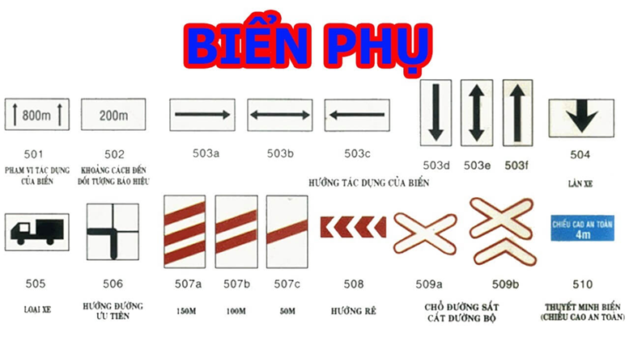

BIỂN THƯỜNG GẶP
BIỂN BÁO CẤM/NGUY HIỂM
là biển biểu thị các điều cấm mà người tham gia giao thông không được vi phạm.
Ngoài người điều khiển giao thông và đèn giao thông, biển báo giao thông giữ vai trò đặc biệt quan trọng trong việc đảm bảo trật tự, an toàn giao thông. Dưới đây là đặc điểm, cách nhận biết các loại biển báo giao thông.
Đọc Ngaylà biển biểu thị các điều cấm mà người tham gia giao thông không được vi phạm.
là biển báo các hiệu lệnh phải chấp hành. Người tham gia giao thông phải chấp hành các hiệu lệnh trên biển báo (trừ một số biển đặc biệt).
dùng để chỉ dẫn hướng đi hoặc các điều cần thiết nhằm giúp người tham gia giao thông trong việc điều khiển phương tiện và hướng dẫn giao thông trên đường được thuận lợi, đảm bảo an toàn.
thường được đặt kết hợp với các biển báo chính nhằm thuyết minh, bổ sung để hiểu rõ, trừ biển số S.507 "Hướng rẽ" được sử dụng độc lập.
Với đặc trưng về màu sắc, người điều khiển phương tiện có thể dễ dàng nhận biết biển báo hình tròn nào thuộc nhóm biển cấm, biển báo nào thuộc nhóm biển hiệu lệnh
có rất nhiều trang mạng xã hội tuyên tuyền về các dụng của các biển báo giúp nâng cao ý thúc luật pháp cho người dân
có nhiều nơi dân cư đông đúc thường đặt biển này để cải thiện an toàn giao thông tại một khu vực